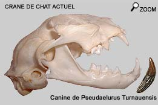
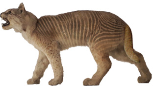
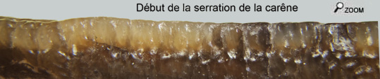

|
  |
||
 |
|
||
La lignée des félins a développé une hyper spécialisation dans le régime alimentaire carné.  Cette dentition est basée sur le principe des ciseaux : permettre aux arêtes coupantes des dents de trancher les chairs. Pseudaelurus est considéré comme l’ancêtre direct des félins actuels dans leur grande diversité. Les félidés sont caractérisés par la vivacité et la précision de leurs membres. Les félins sont des prédateurs fulgurants. Par opposition, la grande espèce quadridentatus est maintenue dans le genre Pseudaelurus. Déterminisme dans le Chaos …
 Le fleuve qui a emporté les restes d’animaux a fini par les classer par décantation différencielle! Comme souvent on observe que les mêmes gisements délivrent les mêmes restes !
De la taille d'un léopard … Dans les faluns, il est possible de rencontrer Pseudaelurus quadridentatus. Ou plus exactement romieviensis, son précurseur daté MN5. La canine supérieure de cette grande espèce est typique parce que très comprimée et aussi parce que les carènes d'émail commencent à développer une sorte de serration par faciliter la découpe de la chair. Ces 2 phénomènes sont encore plus accentués chez Prosansosmilus, de la lignée des félins à dents de sabre. Ce fragment de canine illustre bien ces caractères.  |
|||